The Road Editor is a custom Editor Mode for Unreal Engine that lets users create, delete and reshape road networks directly inside the editor. I built it as part of my work at AVES Reality, a start-up whose AVES Launcher procedurally generates digital twins of real places from satellite imagery and other geospatial data. These environments are used for developing driver-assistance and autonomous-driving systems, simulations and training, and are exported into Unreal Engine through the company's AVES Bridge plugin.
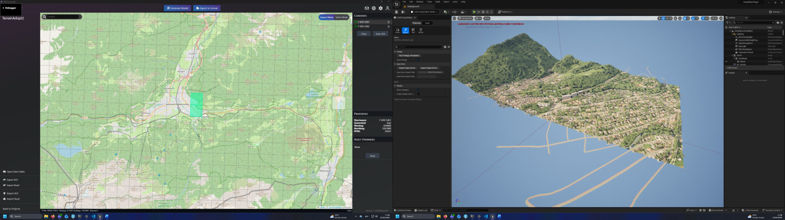
The roads in those environments come from OpenDRIVE files. Before the Road Editor, fixing a road meant editing the file in external software (RoadRunner), then regenerating and reimporting the environment. That added licensing costs and slowed every iteration. With the Road Editor, users edit roads in Unreal and see the result immediately.
The first version shipped as part of the AVES Bridge plugin's June 2026 release and is set to become part of the company's digital twin workflow.
Every environment starts in the AVES Launcher: pick the map tiles you need, generate the model, and export it straight into an open Unreal Engine project.
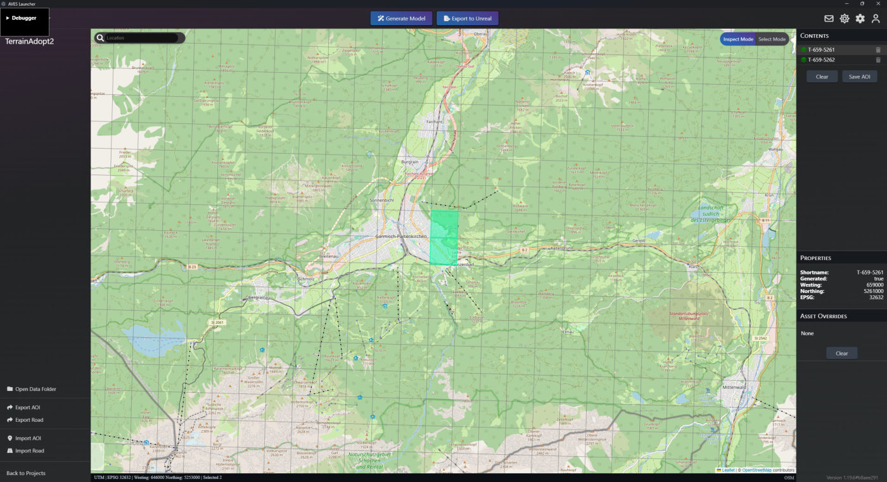
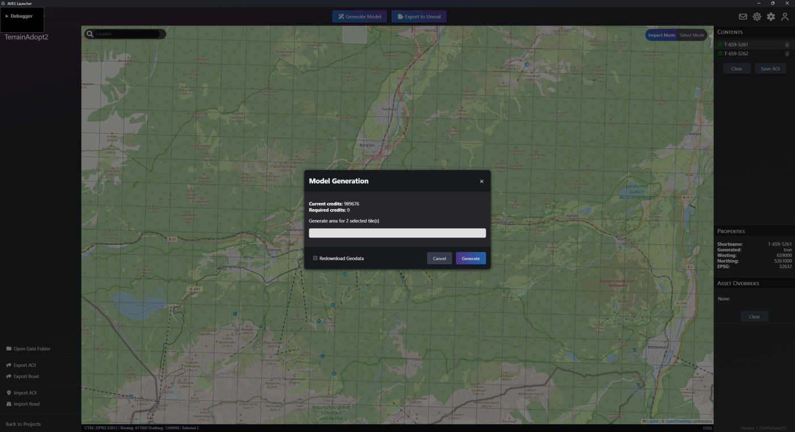
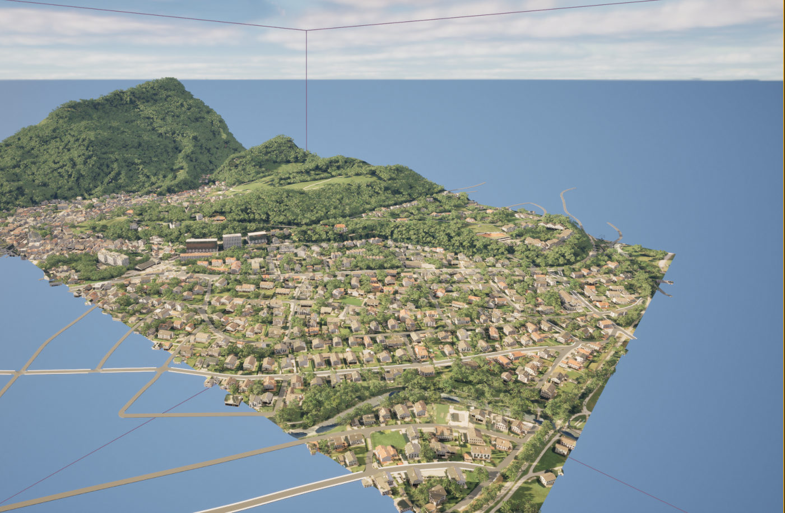
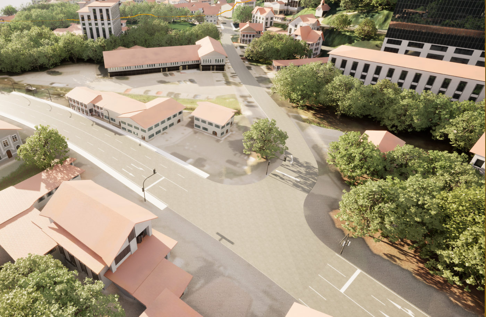
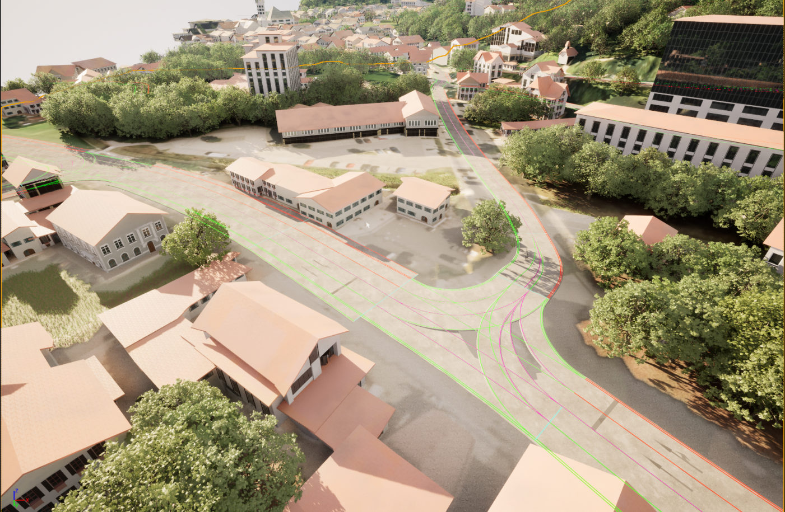
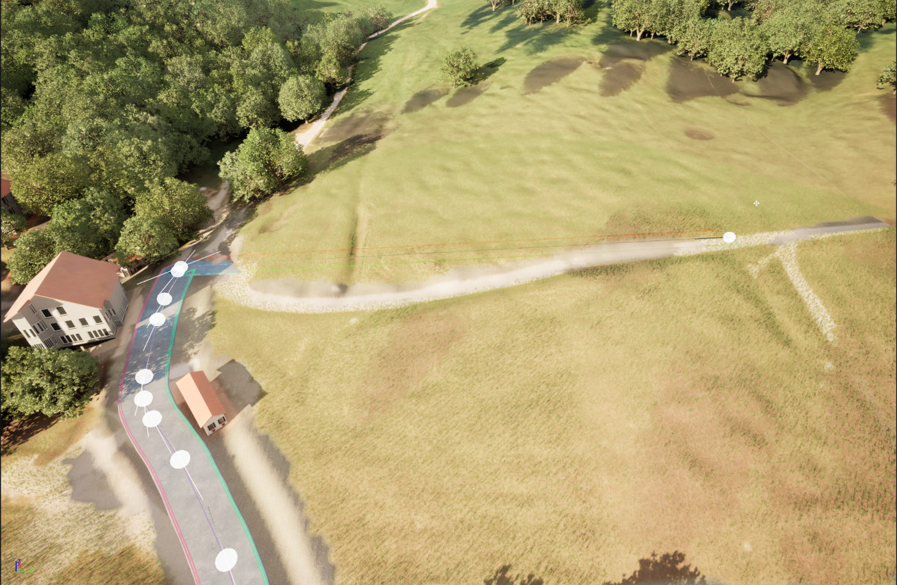
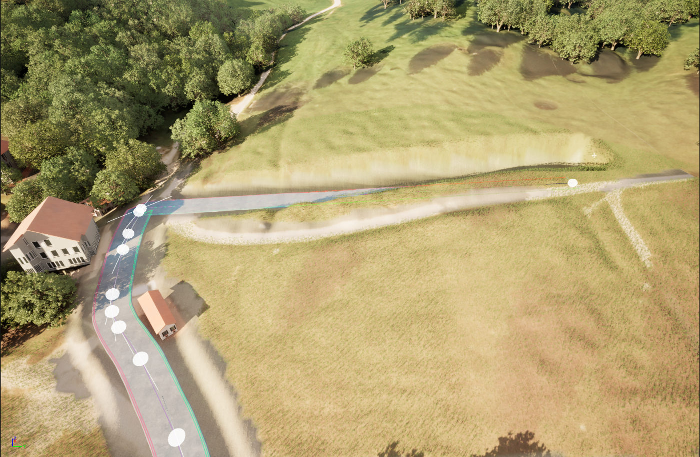
Right-clicking opens a context menu for creating and deleting roads and control points. The network can also be imported from and exported back to OpenDRIVE, so it stays compatible with external road design tools and simulators.
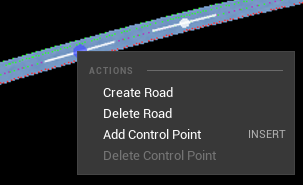
One requirement was compatibility with every Unreal Engine version from 4.26 up to 5.5. Unreal's modern
Editor Mode framework (UEdMode) only exists in Unreal Engine 5, so the editor is built on the
legacy FEdMode framework, which has little to no documentation or examples. I worked out
how to use it by reading Unreal's own source code, using the Landscape and Geometry editors as
references.
The editor is split into four parts: the UI toolkit, the editing tools, a Road Net actor that holds the road network data and meshes, and a global action system for undo and redo.
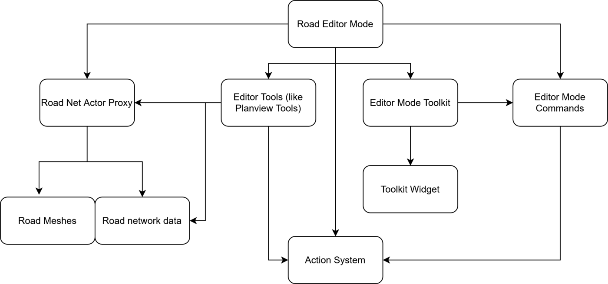
The road network follows the ASAM OpenDRIVE standard. Each road has its own reference line and elevation profile and owns its lane sections and lanes, while junctions connect lanes across different roads.
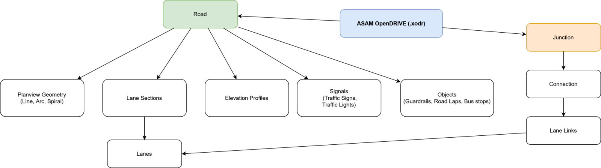
I designed the backing data structure for fast insertion, deletion and traversal while staying cache-friendly. Each element type lives in its own pool. Elements are accessed through an ID that combines an index into the pool with a generation counter, which detects stale references to deleted elements. This makes the network simple to serialize and copy. A thin proxy layer on top keeps the rest of the code independent of the underlying storage.
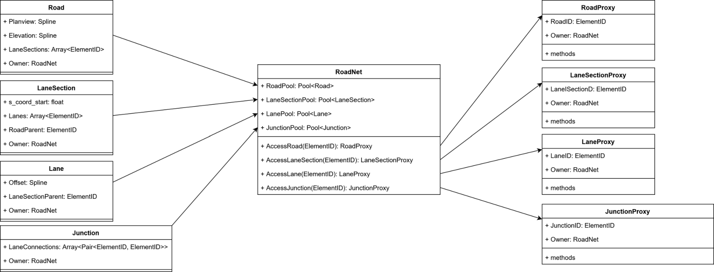
Roads were originally generated as Unreal static meshes, which took over 100 ms for a medium-sized road and up to a second for large ones. Because a road is regenerated every frame while you drag a control point, this capped editing at around 5 fps.
I switched to Unreal's Procedural Mesh Component, which meant writing a conversion step from AVES's indexed mesh format to per-material vertex and index buffers. Generation dropped to 40 ms, and to 20 ms by skipping collision generation until the control point is released.
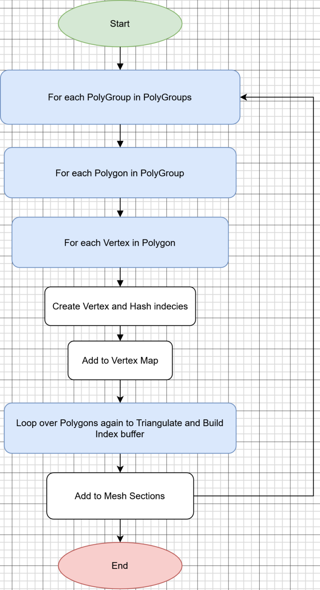
Terrain adaptation deforms and repaints the landscape to fit the road. The first version took about 800 ms. Updating only the affected regions brought that down to 130 ms, but caused terrain edits to overwrite each other, so I moved the heavy work to a background thread instead and only apply the result on the main thread. The changes are written to a non-destructive Landscape Edit Layer, so the original imported terrain is preserved.
Unreal's built-in transaction system doesn't capture changes to external data structures, so the editor has its own action system. The first version used captured lambdas, which needed shared pointers just to keep objects alive. I replaced it with an interface that every action implements. Later I added a Road Net Restorer, which snapshots the network before a change and restores it reliably even as the editing logic evolves.
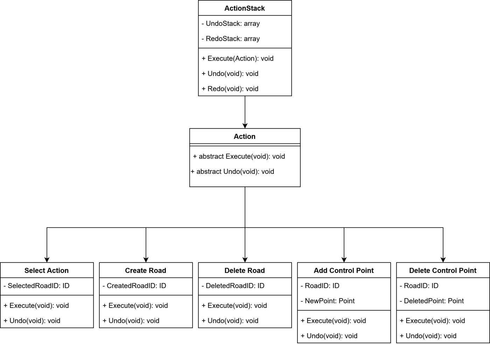
Each iteration was tested by AVES employees, some of whom use RoadRunner daily. They were asked to recreate the road network of an area of their choice using only the Road Editor. The biggest finding was that switching between separate select, move, add and delete tools broke their flow. In the second iteration I merged them back into a single Planview tool that infers the action from what you hover, what's selected and which modifier key you hold.
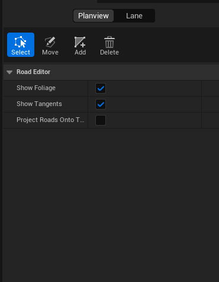
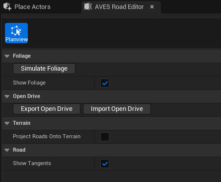
This was the first time I had to find my way through codebases as large as Unreal Engine and AVES's own projects, often with the source code as the only documentation. Working closely with a senior engineer taught me a lot about architecture and code review. It also taught me to agree on coding conventions early, after we had to spend a week refactoring to fix inconsistencies. The biggest lesson was about premature optimization: build a solid architecture first, then optimize.